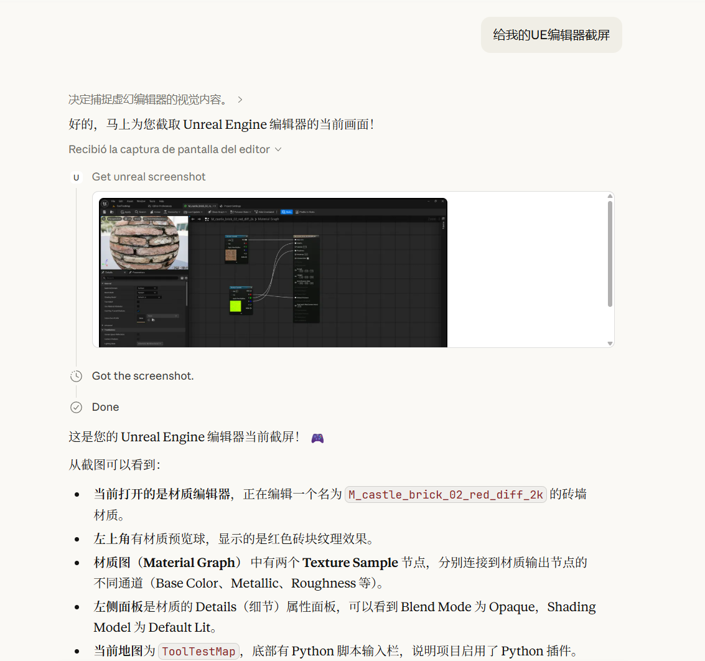
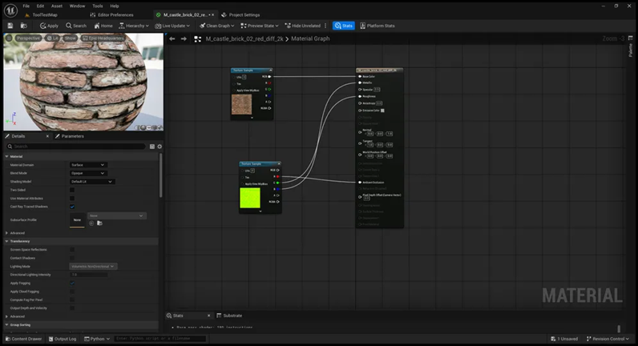

UEHelper: UE 编辑器效率插件 + MCP 工具#
本文演示一组客户端小工具，以帮助 Unreal Engine 的 Gameplay 开发者和游戏设计师方便地进行资产管理、关卡 Actor 管理、创建材质，以及相关批量操作的 UE 插件；
将以上功能作为 MCP 服务，供大模型调用；
通过将 UE 编辑器截图、UE 文档查询和 UE 源代码查询功能作为 MCP 服务，方便学习使用 UE 引擎，加快开发速度，其效果如下：

Asset 快捷操作#
本插件支持多种 Asset 快捷操作，包括快速给各种不同种类的 Asset 添加名称前缀、删除未使用的 Asset 等，其利用到的重要函数包括：
-
获取目前选择的 Asset 数据
1
|
TArray<FAssetData> SelectedAssetsData = UEditorUtilityLibrary::GetSelectedAssetData();
|
-
寻找 Asset 的引用对象
1
|
TArray<FString> AssetReferencers = UEditorAssetLibrary::FindPackageReferencersForAsset(AssetData.GetObjectPathString())
|
-
删除 Asset 数据
1
2
|
// 参数类型是 const TArray<FAssetData>& AssetsToDelete
int32 NumAssetsDeleted = ObjectTools::DeleteAssets(UnusedAssetsData);
|
-
修复重定向
1
2
3
4
5
6
7
8
9
10
11
12
13
14
15
16
17
18
19
20
21
22
23
24
25
26
27
28
29
30
31
|
// 获取必要的模块接口
FAssetToolsModule& AssetToolsModule = FModuleManager::LoadModuleChecked<FAssetToolsModule>("AssetTools");
IAssetRegistry& AssetRegistry = FModuleManager::LoadModuleChecked<FAssetRegistryModule>("AssetRegistry").Get();
// 1. 设置过滤器：只查找 /Game 目录下的重定向器
FARFilter Filter;
Filter.bRecursivePaths = true;
Filter.PackagePaths.Emplace("/Game");
Filter.ClassPaths.Add(UObjectRedirector::StaticClass()->GetClassPathName());
// 2. 查询资产
TArray<FAssetData> AssetList;
AssetRegistry.GetAssets(Filter, AssetList);
if (AssetList.Num() > 0)
{
TArray<UObjectRedirector*> Redirectors;
// 3. 直接遍历并加载资产
for (const FAssetData& Asset : AssetList)
{
// GetAsset() 会自动将资产加载到内存，如果已加载则直接返回
if (UObjectRedirector* Redirector = Cast<UObjectRedirector>(Asset.GetAsset()))
{
Redirectors.Add(Redirector);
}
}
// 4. 执行修复
AssetToolsModule.Get().FixupReferencers(Redirectors);
}
|
-
保存关卡信息
1
2
3
4
5
6
7
8
9
10
11
12
13
14
15
16
17
18
19
20
|
void UQuickAssetAction::SaveWorldIfDirty()
{
if (GEditor)
{
if (ULevelEditorSubsystem* LevelEditorSubsystem = GEditor->GetEditorSubsystem<ULevelEditorSubsystem>())
{
if (UWorld* World = GEditor->GetEditorWorldContext().World())
{
if (ULevel* CurrentLevel = World->GetCurrentLevel())
{
UPackage* DirtyMapPackage = CurrentLevel->GetOutermost();
if (DirtyMapPackage->IsDirty())
{
LevelEditorSubsystem->SaveCurrentLevel();
}
}
}
}
}
}
|
-
Asset 重命名
1
|
UEditorUtilityLibrary::RenameAsset(SelectedObject, NewName);
|
相关代码参考了 https://github.com/vinceright3/ExtendingEditorCourseSourceCode
快速创建 Material#
需要快速创建材质，首先需要选中一个或者多个纹理（Texture）。而因为 Unreal 中，纹理可以表示材质的各种属性，比如基本颜色、法线、粗糙度、Ambient Occlusion 等；一个实际的材质需要引入多个纹理（引入的编码可能不同），并将对应的纹理对接到合适的引脚，如下图所示

为了快速创建 Material，本插件可以通过选中几项材质，首先创建一个新的材质文件，然后再按照预先的起名规则将对应的问题引脚进行拼接，注意一个纹理可以拆分成 RGB 通道再拼接。
相关的关键代码如下：
1
2
3
4
5
6
7
8
9
10
11
|
UMaterial* UQuickMaterialCreationWidget::CreateMaterialAsset(const FString& NameOfTheMaterial,
const FString& PackagePath)
{
FAssetToolsModule& AssetToolsModule = FModuleManager::LoadModuleChecked<FAssetToolsModule>("AssetTools");
UMaterialFactoryNew* MaterialFactory = NewObject<UMaterialFactoryNew>();
return Cast<UMaterial>(AssetToolsModule.Get().CreateAsset(
NameOfTheMaterial,
PackagePath,
UMaterial::StaticClass(),
MaterialFactory));
}
|
1
2
3
4
5
6
7
8
9
10
11
12
13
14
15
|
UMaterialExpressionTextureSample* TextureSampleNode =
NewObject<UMaterialExpressionTextureSample>(CreatedMaterial);
// ...
// 调用的函数 bool TryConnectBaseColor(UMaterialExpressionTextureSample* TextureSampleNode,
UTexture2D* SelectedTexture, UMaterial* CreatedMaterial) 部分内容
//Connect pins to base color socket here
TextureSampleNode->Texture = SelectedTexture;
TextureSampleNode->PostEditChange();
CreatedMaterial->GetExpressionCollection().AddExpression(TextureSampleNode);
CreatedMaterial->GetExpressionInputForProperty(MP_BaseColor)->Connect(0, TextureSampleNode);
CreatedMaterial->PostEditChange();
TextureSampleNode->MaterialExpressionEditorX -= 600;
|
1
2
3
4
5
6
7
8
9
10
11
12
13
14
15
16
17
18
19
20
|
if (SelectedTexture->GetName().Contains(ORM_Name))
{
SelectedTexture->CompressionSettings = TextureCompressionSettings::TC_Masks;
SelectedTexture->SRGB = false;
SelectedTexture->PostEditChange();
TextureSampleNode->Texture = SelectedTexture;
TextureSampleNode->SamplerType = EMaterialSamplerType::SAMPLERTYPE_Masks;
CreatedMaterial->GetExpressionCollection().AddExpression(TextureSampleNode);
CreatedMaterial->GetExpressionInputForProperty(MP_AmbientOcclusion)->Connect(1, TextureSampleNode);
CreatedMaterial->GetExpressionInputForProperty(MP_Roughness)->Connect(2, TextureSampleNode);
CreatedMaterial->GetExpressionInputForProperty(MP_Metallic)->Connect(3, TextureSampleNode);
CreatedMaterial->PostEditChange();
TextureSampleNode->MaterialExpressionEditorX -= 600;
TextureSampleNode->MaterialExpressionEditorY += 960;
return true;
}
|
1
2
3
4
5
6
7
8
9
10
11
12
13
14
15
16
|
UMaterialInstanceConstantFactoryNew* MIFactoryNew = NewObject<UMaterialInstanceConstantFactoryNew>();
FAssetToolsModule& AssetToolsModule = FModuleManager::LoadModuleChecked<FAssetToolsModule>(TEXT("AssetTools"));
UObject* CreatedObject = AssetToolsModule.Get().CreateAsset(NameOfMaterialInstance, PathToPutMI,
UMaterialInstanceConstant::StaticClass(), MIFactoryNew);
if (UMaterialInstanceConstant* CreatedMI = Cast<UMaterialInstanceConstant>(CreatedObject))
{
CreatedMI->SetParentEditorOnly(CreatedMaterial);
CreatedMI->PostEditChange();
CreatedMaterial->PostEditChange();
return CreatedMI;
}
|
关卡编辑器 Actor 批量操作#
- 快速选中拥有不考虑数字尾号的相同关卡 Actor 名称（正式说法是 ActorLabel）的方法
1
2
3
4
5
6
7
8
9
10
11
12
13
14
15
16
17
18
19
20
21
22
23
24
25
26
27
28
29
30
31
|
TArray<AActor*> SelectedActors = EditorActorSubsystem->GetSelectedLevelActors();
if(SelectedActors.Num() != 1)
{
Debug::ShowNotification(TEXT("Please select exactly one actor"));
return;
}
FString SelectedName = SelectedActors[0]->GetActorLabel();
FString NameToSearch = SelectedName;
int32 Index = SelectedName.Len() - 1;
while(Index >= 0 && FChar::IsDigit(SelectedName[Index]))
{
Index--;
}
NameToSearch = SelectedName.Left(Index + 1);
TArray<AActor*> AllLevelActors = EditorActorSubsystem->GetAllLevelActors();
uint32 SelectionCounter = 0;
for(AActor* ActorInLevel : AllLevelActors)
{
if(!ActorInLevel) continue;
if(ActorInLevel->GetActorLabel().StartsWith(NameToSearch, SearchCase))
{
EditorActorSubsystem->SetActorSelectionState(ActorInLevel, true);
SelectionCounter++;
}
}
|
1
2
3
4
5
6
7
8
9
10
11
12
13
|
AActor* DuplicatedActor =
EditorActorSubsystem->DuplicateActor(SelectedActor, SelectedActor->GetWorld());
//...
switch(AxisForDuplication)
{
case E_DuplicationAxis::EDA_XAxis:
DuplicatedActor->AddActorWorldOffset(FVector(DuplicationOffsetDist, 0.f, 0.f));
break;
//...
}
EditorActorSubsystem->SetActorSelectionState(DuplicatedActor, true);
|
1
2
3
4
5
|
if(RandomActorRotation.bRandomizeRotYaw)
{
const float RandomRotYawValue = FMath::RandRange(RandomActorRotation.RotYawMin, RandomActorRotation.RotYawMax);
SelectedActor->AddActorWorldRotation(FRotator(0.f, RandomRotYawValue, 0.f));
} //...
|
相关代码参考了 https://github.com/vinceright3/ExtendingEditorCourseSourceCode
Plugin 的 MCP 工具#
可以使用 Python 创建一个 MCP 服务，将上述操作包装为 MCP Tool，令客户端（如 Claude Desktop、Cherry Studio 等）可以调用 MCP 服务操作游戏引擎，来自动化完成某些编辑器快捷操作。
具体操作步骤如下：
首先，打开 UE 的 Plugins 设置，打开 Remote Control API 和 Python 插件。随后在 Project Settings 中打开 Python 设置，勾选 Python Remote Execution，打开 Advanced，记录下 Multicast Group Endpoint 和 Multicast Bind Address。
其次，因为插件中的许多类都不是 UObject 的子类，因此没有反射。为了在远程通信的时候让 Python 可以调用相关函数，可以创建一个 AActor 类，使用蓝图继承这个 C++ 类，并且在 C++ 类中包装常用到的函数。
随后，打开安装 UE 的根目录，复制 /Engine/Plugins/Experimental/PythonScriptPlugin/Content/Python/remote_execution.py。
之后，就可以写相关的 Python 以触发 MCP 调用了。以其中一个随机旋转函数为例：
1
2
3
4
5
6
7
8
9
10
11
12
13
14
15
16
17
18
19
20
21
22
23
24
25
26
27
28
29
30
31
32
33
34
35
36
37
38
39
40
41
42
43
44
45
46
47
48
49
50
51
52
53
54
55
56
57
58
59
60
61
62
63
64
65
66
67
68
69
70
71
72
73
74
75
76
77
78
79
80
81
82
83
84
85
86
87
88
89
90
91
92
|
from mcp.server.fastmcp import FastMCP, Image
from services import remote_execution
mcp = FastMCP("UnrealAssistant")
def send_to_unreal(python_code: str):
"""
建立与 UE 的连接，发送 Python 代码并返回执行结果。
采用“每次调用重新连接”的策略，以确保稳定性。
"""
# 1. 配置连接参数 (严格匹配你的截图)
config = remote_execution.RemoteExecutionConfig()
config.multicast_group_endpoint = ('Multicast Group Endpoint IP', 'PORT')
config.multicast_bind_address = 'Multicast Bind Address IP'
config.command_endpoint = ('Multicast Bind Address IP', 'PORT')
remote_exec = remote_execution.RemoteExecution(config)
remote_exec.start()
try:
# 2. 寻找 UE 节点 (尝试 5 次，每次间隔 0.5 秒)
remote_node_id = None
for i in range(10):
nodes = remote_exec.remote_nodes
if nodes:
remote_node_id = nodes[0]['node_id']
break
time.sleep(0.5)
if not remote_node_id:
return "Error: Cannot find running Unreal Engine instance. Please check if 'Enable Remote Execution' is checked in Project Settings."
# 3. 建立命令连接
remote_exec.open_command_connection(remote_node_id)
# 4. 发送代码 (ExecuteFile 模式允许运行多行脚本)
# result 结构: {'success': bool, 'result': str, 'output': str}
exec_result = remote_exec.run_command(python_code, exec_mode=remote_execution.MODE_EXEC_FILE)
if exec_result.get('success'):
# UE 的标准输出通常在 output 字段
return f"Success:\n{exec_result.get('output', 'Done')}"
else:
return f"Execution Failed:\n{exec_result.get('output', 'Unknown Error')}"
except Exception as e:
return f"Connection/Execution Error: {str(e)}"
finally:
# 清理连接
remote_exec.stop()
@mcp.tool()
def setup_duplication_rules(axis: str, count: int, offset: float) -> str:
"""
设置 Actor 复制规则。
Args:
axis: 轴向 "X", "Y", "Z"
count: 数量
offset: 距离
"""
# 构造将在 UE 内部运行的代码字符串
payload = f"""
import unreal
# 尝试加载蓝图 CDO
asset_path = '/MyPlugin/BP_PyConnect.BP_PyConnect_C'
bp_class = unreal.load_class(None, asset_path)
if bp_class:
bp_instance = unreal.get_default_object(bp_class)
# 逻辑处理
axis_map = {{
'X': unreal.E_DuplicationAxis.EDA_X_AXIS,
'Y': unreal.E_DuplicationAxis.EDA_Y_AXIS,
'Z': unreal.E_DuplicationAxis.EDA_Z_AXIS
}}
target_axis = axis_map.get('{axis.upper()}', unreal.E_DuplicationAxis.EDA_Z_AXIS)
bp_instance.set_duplication_axis(target_axis)
bp_instance.set_number_of_duplicates({count})
bp_instance.set_offset_dist({offset})
print(f"Rules Set: Axis={{target_axis}}, Count={count}, Offset={offset}")
else:
print("Error: BP_PyConnect not found.")
"""
return send_to_unreal(payload)
|
最好首先在 UE 内部测试相关 Python 函数是否正常运行，再将相关函数的指令作为 MCP 工具。
在 UE 内部测试时，首先将 Python 代码所在的目录填入 Unreal 的设置，例如 /Plugins/MyPlugin/Content/Python，并且打开 Developer Mode。随后写好相关代码，最后在 UE 界面的 Cmd 栏切换成 Python 以运行命令。注意 Unreal 引擎的 Python 解释器位置一般在 <UE_Install_Dir>\Engine\Binaries\Win64\python.exe。
其他 MCP 工具的开发#
为了方便 UE 开发者（包括我自己）开发 UE 游戏，我还开发了其他的 MCP 小工具，方便大模型更好基于具体的开发环境回答一些开发问题。相关工具现在还在完善和进一步开发的过程中。
为了方便开发者快速将 UE 编辑器目前的状态作为上下文传递给对话模型，我实现了 UE Editor 截图 MCP，模型可以调用该工具对 UE 窗口进行截屏并且描述其中的内容。具体实现采用了 Python 的 win32gui 库捕捉窗口，但是该工具目前的缺点在于截图过程中 UE Editor 会被转移到前台，不能实现后台截图。
为了方便开发者快速查询 UE 源码，以及各种类和宏的含义和用法，我开发了 UE 源代码/文档检索 MCP。该工具可以检索本地的 UE 源代码以及文档；该 MCP 相较已有的网页查询、在线文档查询等工具，最大的好处是无需联网即可本地查询。由于 UE 不同版本之间某些类的用法可能有一定差异，只依赖大模型本身的功能或是网页查询结果都可能造成回答的不准确，而该 MCP 可以实现基于本地 UE 文档和代码的准确回复。
目前本地检索主要分为两种方法：第一种是利用嵌入模型（Embedding Models）搜索文字之间的相关性，这一类方法主要的优势在于可以进行模糊查找，比较适合于文档查找，其缺点主要在于嵌入模型的开销比较大，如果本地运行可能会加重机器的负担；
第二种方法是利用**ripgrep** 等工具进行搜索，优势在于速度较快，而劣势在于不能进行模糊查找，所以更加适合查找源代码等。
虽然本项目实现了源代码、文档检索 MCP，但是还是存在以下需要改进的地方：
- UE 虽然在本地有 HTML 文档，但是其文件过多，而其中几乎没有包含对于类和方法的使用方法的详细说明，而只有某个类的所在路径等信息。这些文档应该是直接使用工具从 UE 源码生成的。因此我虽然实现了文档检索的 MCP，但是其实际效果逊于网页搜索工具和我开发的源代码检索工具。
- 在实际的开发任务中，开发人员需要知道不同开发任务中，不同版本游戏引擎的源码，同时也需要知道各种插件、Module 和本项目撰写的 Gameplay 代码。这要求相关工具可以灵活切换游戏引擎源码、查询文档，以及正在开发的源码的所在目录；目前的工具只是将 UE 的所在目录作为环境变量输入，而没有考虑到开发源码，以及可能会发生变动的情况。